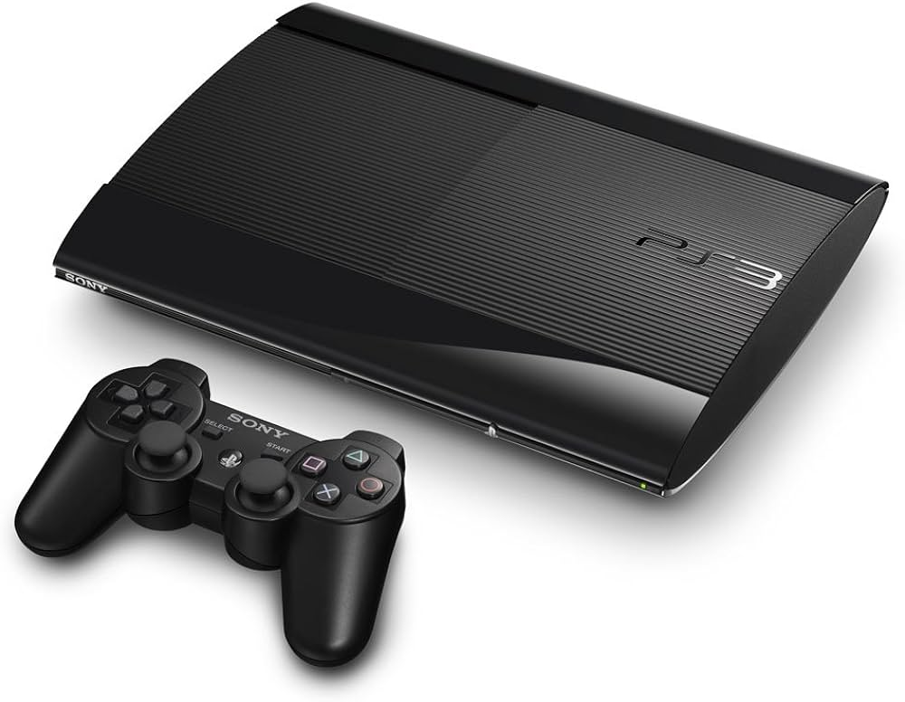

The Beginning
My first ever gaming console that I got was a playstation 3 along with black ops (the first one). I was aeound 10-12 when I got the PS3 as a gift, so I have been gaming for around 8 years. Back then, I would play a lot, and I basically addicted to gaming and could play for hours at a time without getting board.
Improvment
When the PS4 came out, First, my brother got it from my dad, then like 1-2 years later I was able to get it. However, I didn't just get the regular PS4, I got the black ops 3 special PS4. I have had it ever since, but the controler had stick drift, so I had to replace it. Anyways, Around these time I was still addicted to gaming and would always come home from school and start playing immediatly.

Current Time
Like I said previously, I still have the same PS4, but I use it way less than before. During all the time before my 16th birthday I had never had a laptop, so when I finally got a laptop a lot of my time for gaming was taken and put into the laptop. I also started playing more PC games, so that also made me spend less time using my PS4. I also plan on building my own PC because I want to move to playing more PC games, so for the future I will be mainly using a computer and maybe at times I can go back to my PS4.
Click for a surprise!